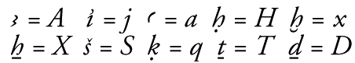

The Beinlich Wordlist
Update 13 February 2014
See below the form for information "What is the Beinlich wordlist?", "Getting the Beinlich wordlist", "What is the Manuel de codage ?", and "Copyright information and credits".
Egyptian transcription for this form should be entered using the Manuel de codage transcription system:

Note that jj is used for y , and that z and s are not distinguished.
Click on the Submit button when you have entered the data you wish to search for.
What is the Beinlich wordlist?
The handlist of Ancient Egyptian words known to Egyptologists as the "Beinlich Wordlist" was announced by Horst Beinlich and Friedhelm Hoffmann in Göttinger Miszellen 140 (1994), 101-3. The raw data of the Wordlist is simply the Egyptian word in transliteration, a German translation, and brief references to the Wörterbuch or more recent publications. It is everyone's wish that the authors' hope of translations of the wordlist into other languages might come about.
Beinlich and Hoffmann were from the start very keen to make the basic data file of the list available to colleagues, either by email or disc. My first involvement with this list was first to make it available over the Internet by FTP.
The World Wide Web permits the consultation of databases online. It occurred to me in 1995 that the Beinlich wordlist might be an ideal candidate for such a database, and it has developed from there. The latest version permits searching by transcription, German translation, or reference (to pages primarily from the Wörterbuch or Année Lexicographique).
Use the form below now, or skip it for the time being for more information.
Beinlich and Hoffmann were from the start very keen to make the basic data file of the list available to colleagues, either by email or disc. I first made it available over the Internet by FTP. Now the following link will allow it to be downloaded as a 250K ZIP file.
Download Beinlich.txt.zip
The Manuel de codage transliteration system
One of the problems with dealing with Egyptian transcription is that we use a number of diacritics which have no standardised encoding on computers -- one man's aleph is another man's shin. The Manuel de codage transliteration system was first developed in the early 1980s, and has been published in Informatique et égyptologie 2 (Paris 1985, 1986, 1988). It transcribes all the letters of the Egyptian alphabet (if I may be forgiven for using that term) into low ASCII characters which can be typed in on any computer. The principal codings of diacritics are:
Another dimension to the Manuel de codage is that it proposes a method for encoding hieroglyphic texts so that they can be stored in a computer and then processed by appropriate software to print the text out again. The Manuel is presently out of print.
I find this personally very useful as a system. The only problem I have encountered is that it does not cope with capital versions of transliteration characters--but then Egyptologists could argue for hours whether these are needed.
Copyright and credits
In 1995 the program ran on a Filemaker database on a Macintosh web server. The Perl program which ran from 1996 to 2002 is © Nigel Strudwick 1996, adapted from a program by Des Keane.
However, in early 2002 it was pointed out to me that the search results appeared to be missing some elements. Needing help as I am not a Perl programmer meant that I put out a request for assistance. Paul Sciortino (paul [at] hieroglyphs.net, web page www.hieroglyphs.net) responded and rewrote the program for me. I am incredibly grateful to him and acknowledge his copyright and contribution.
With the move to the Fitzwilliam server at the beginning of 2009, the program was again changed. Building on Paul's work and expanding functionality to include more searching and sorting options, the current version of the program (in PHP) was written by Shaun Osborne.
I should like to thank Horst Beinlich and Friedhelm Hoffmann for being agreeable to this material being circulated this way. Thanks are due to Helen Strudwick, Hans van den Berg, Jaromir Malek, Willem Hovestreydt, and Charles E. Jones for testing it and making useful comments.